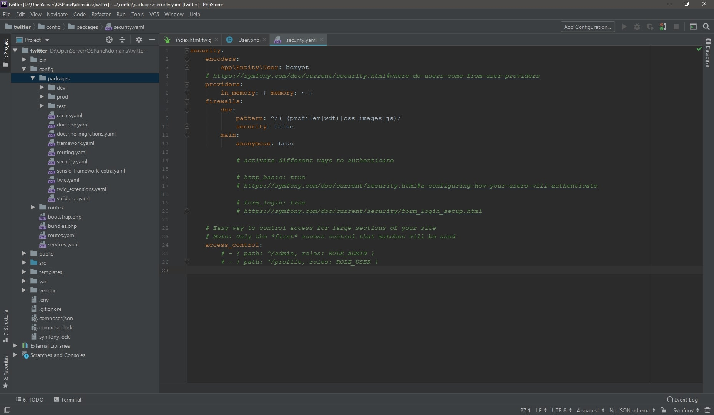
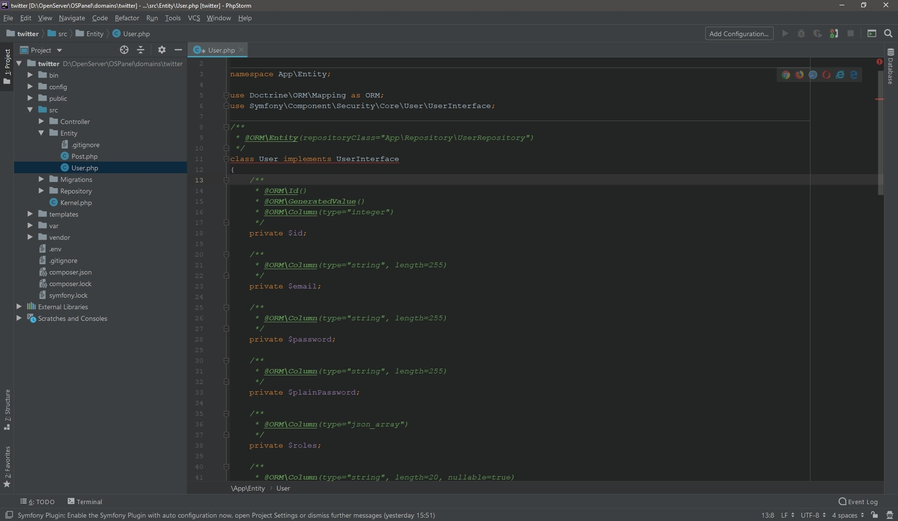
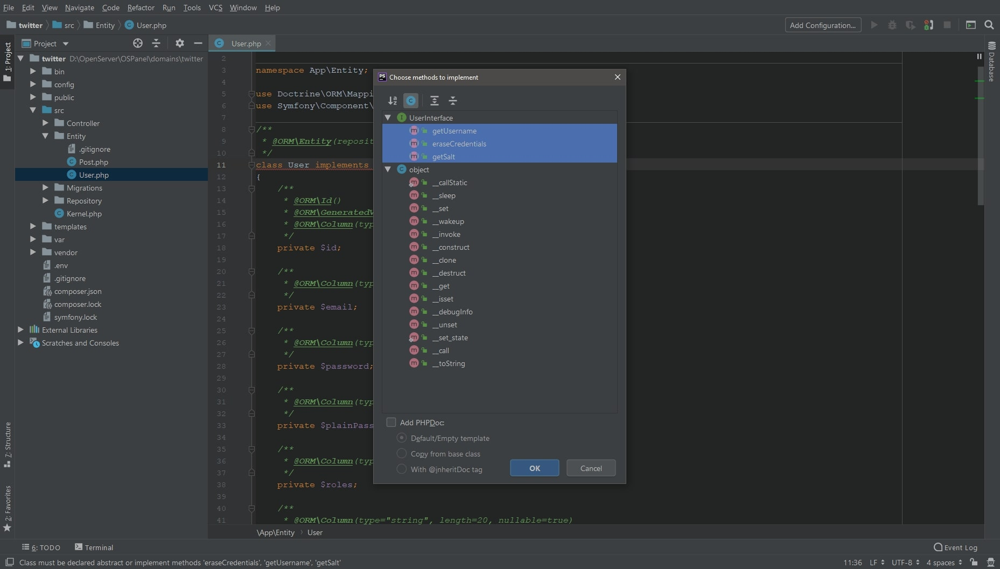

Symfony, user registration
Регистрация, часть 1
Symfony, в отличии от некоторых других фреймворков, не имеет функционала авторизации/регистрации из коробки. Конечно такие пробелы были быстро закрыты энтузиастами (которые, к слову, входят в число разработчиков Symfony) библиотекой FOSUserBundle. Не смотря на это мы пойдем во все тяжкие и будем делать все вручную, ну а кому интересно как ее подключить – есть инструкция.
Для реализации функционала регистрации нам потребуется securityBundle,
подключим его с помощью алиаса security - composer require security.
Данный бандл представляет из себя очень обширный набор настроек безопасности вашего приложения.
Например, указание алгоритма шифрования паролей, access_control для доступа по ролям,
провайдеры данных и многое другое. Мы еще вернемся к безопасность, когда будем настраивать доступы.
Конкретно сейчас, после подключения рецепта, нам стоит сразу же указать алгоритм шифрования паролей.
Для этого в файл config=>packages=>security.yaml нужно добавить:
encoders:
App\Entity\User:
algorithm: bcrypt
cost: 12

Теперь генерируем сущность User.
В консоли пишем php bin/console make:entity User и
присваиваем ему набор свойств. * Внимательно проверьте корректность ввода данных!
Свойства класса User:
- - id (генерируется по умолчанию, поэтому пропускаем);
- - email (string, 255, not null);
- - password (string, 255, not null);
- - plainPassword (string, 255, not null) - для временного хранения пароля;
- - roles (json_array, not null);
- - confirmationCode (string, 20, null) - код подтверждения в email;
- - is_confirmed (boolean, not null) - активирован юзер или нет.
Вы вольны делать класс User таким, каким хочется, но есть одно требование - необходимо имплементировать UserInterface от которого мы получим стандартные методы – getUsername, getSalt, eraseCredentials и т.д. Так что дописываем implements UserInterface, добавляем соответствующий namespace и методы из интерфейса. Должно получиться так: 
{kind=link}
Если у вас phpStorm - не мучайтесь и не переносите методы UserInterface в класс User руками.
CTRL + I в классе User,
выберите методы интерфейса и нажмите OK.

{kind=link}
Теперь осталось подгогнать методы и свойства класса User под наши нужды.
-
Пользователи по умолчанию будут иметь роль, не поверите,
пользователя. Реализуем это с помощью константы
ROLE_USER. Добавляем в начало класса:public const ROLE_USER = 'ROLE_USER';public function __construct() { $this->roles = [self::ROLE_USER]; }getRoles:public function getRoles() { return [ 'ROLE_USER' ]; } -
Унаследованный от UserInterface метод eraseCredentials очищает введенные данные пользователя,
с его помощью мы будем обнулять свойство $plainPassword (использование которого по сути является
рекомендацией). Список шагов будет таким:
- - в форме используем не $password, а $plainPassword;
- - получаем пароль от пользователя в виде простого текста;
- - передаем текст шифровальщику и присваиваем кодированный пароль свойству $password;
- - на этапе аутентификации вызывается метод eraseCredentials() и присваивает $plainPassword значение null.
public function eraseCredentials() { $this->plainPassword = null; } -
plainPassword, как уже было указано, потребуется для временного сохранения пароля
и в базу данных записывать его не имеет смысла. Полностью удаляем над ним блок аннотаций,
чтобы не смущать доктрину.
private $plainPassword; -
Возврат метода getSalt меняем на null просто потому что он имплементировался, а использовать его не будем.
public function getSalt() { return null; } -
В getUsername возвращаем
$this->email. Это в нашем случае, а вообще возвращаем то что будет нужно для авторизации. Например login или username;public function getUsername() { return $this->email; }
С классом User покончено. Теперь просто выполним миграции.
Первая команда вычислит разницу между БД и имеющимися классами,
а вторая выполнит миграцию.
php bin/console doctrine:migrations:diff
php bin/console doctrine:migrations:migrate